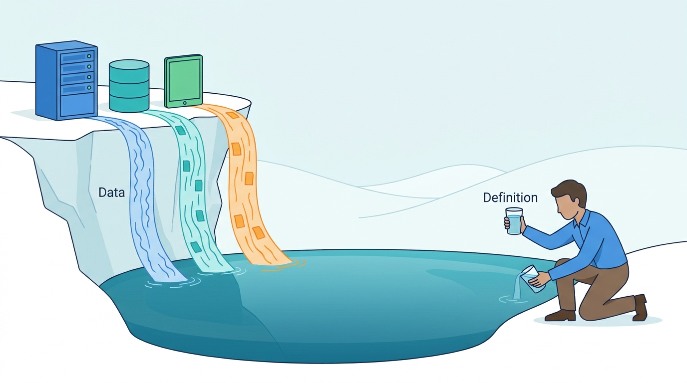

Part VI — INTEGRATION: Making Separate Systems Behave Like One
Counting the Same Thing Everywhere: Data Platforms, Definitions and Analytics
AI-assisted: researched and written with Claude Code and Codex; illustrations generated with Gemini and OpenAI image tools. How this works
